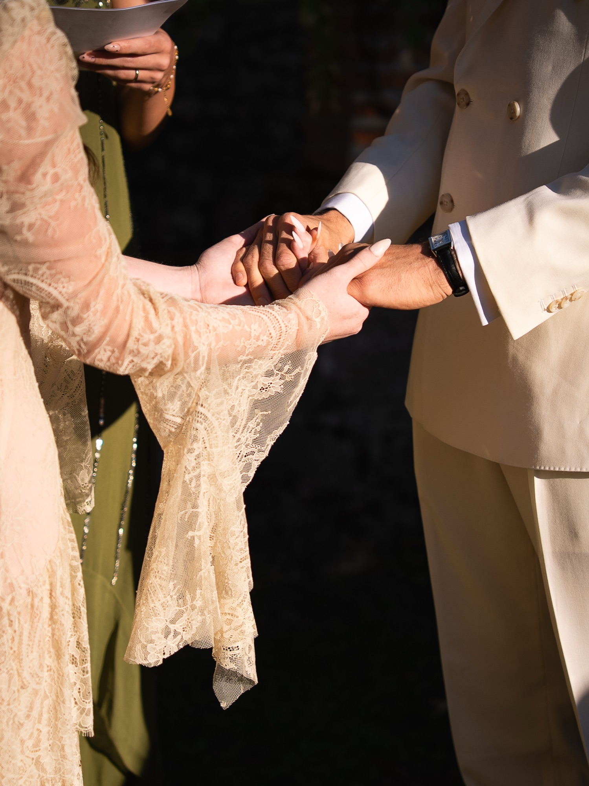
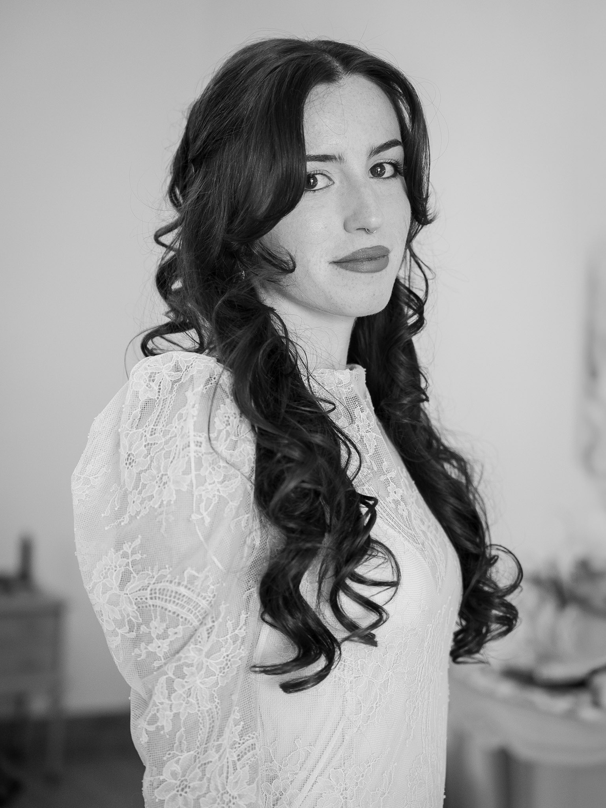
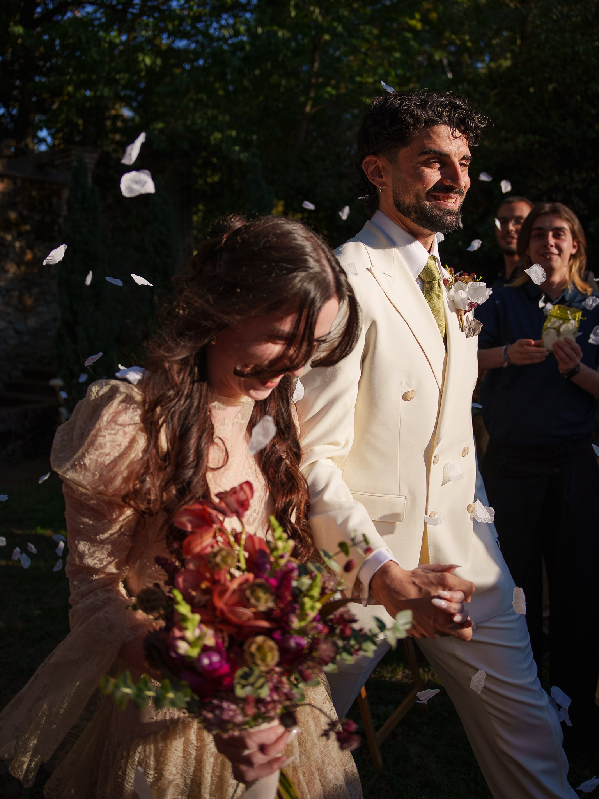
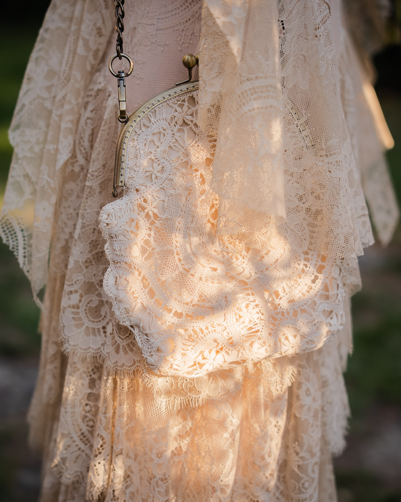
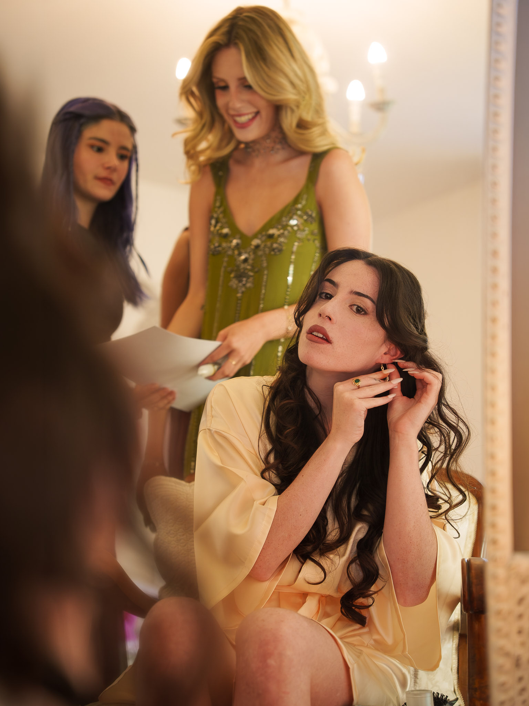
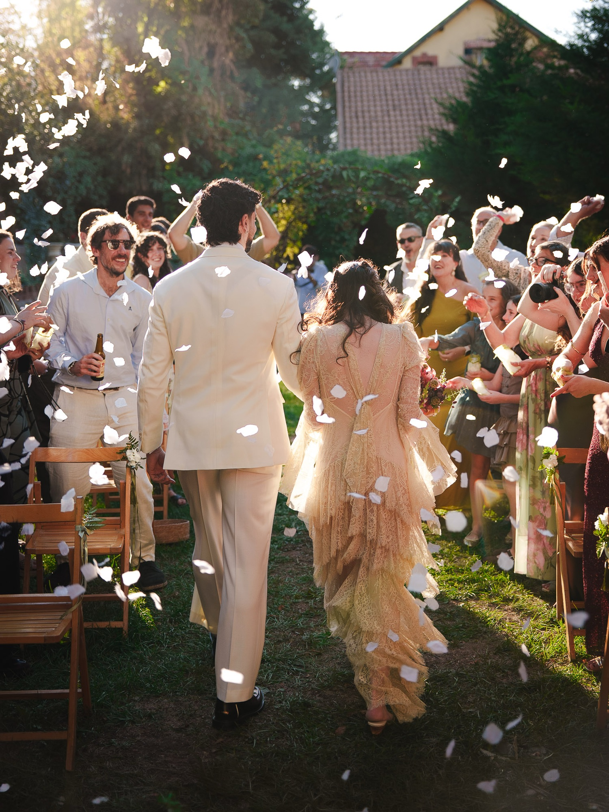
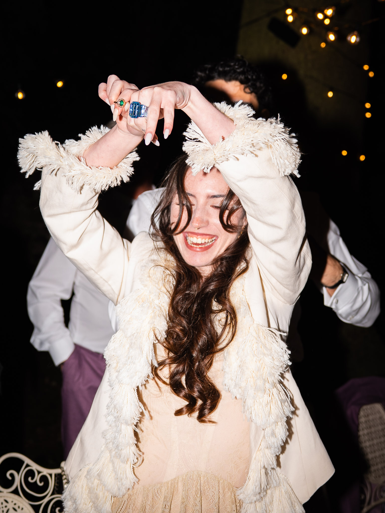
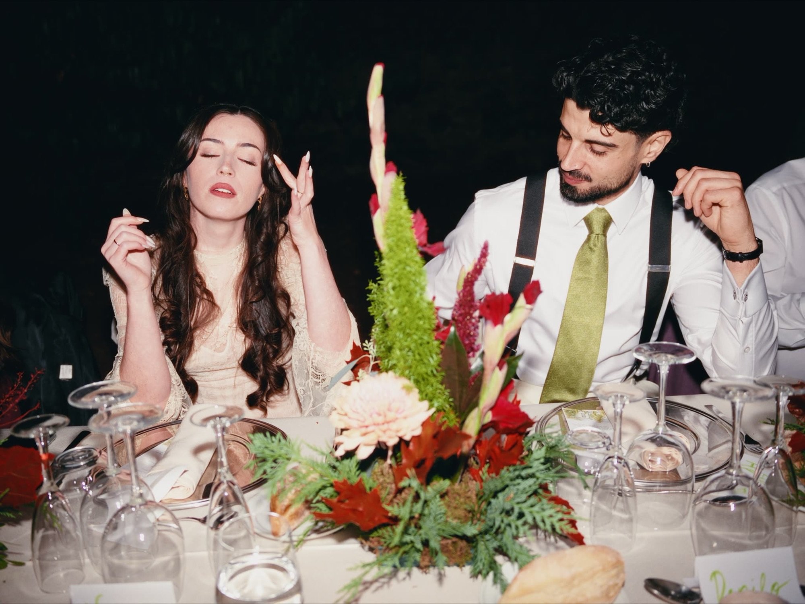
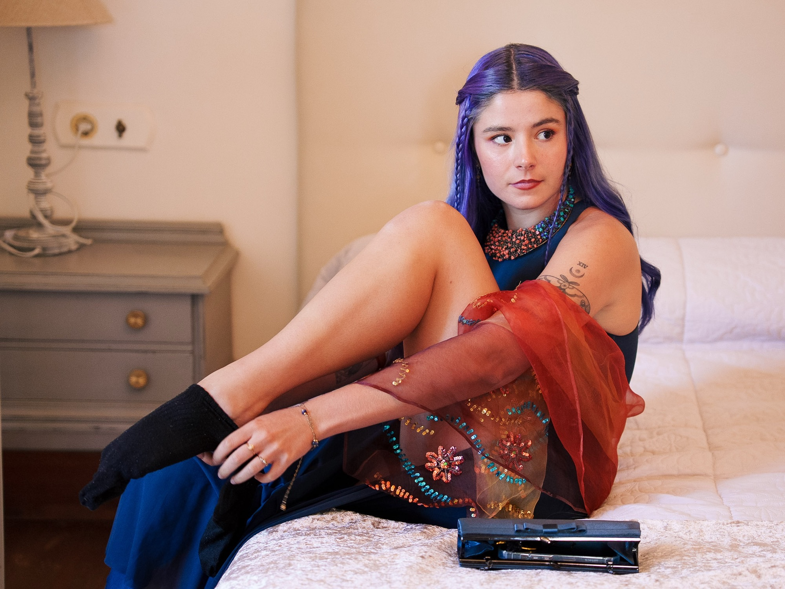
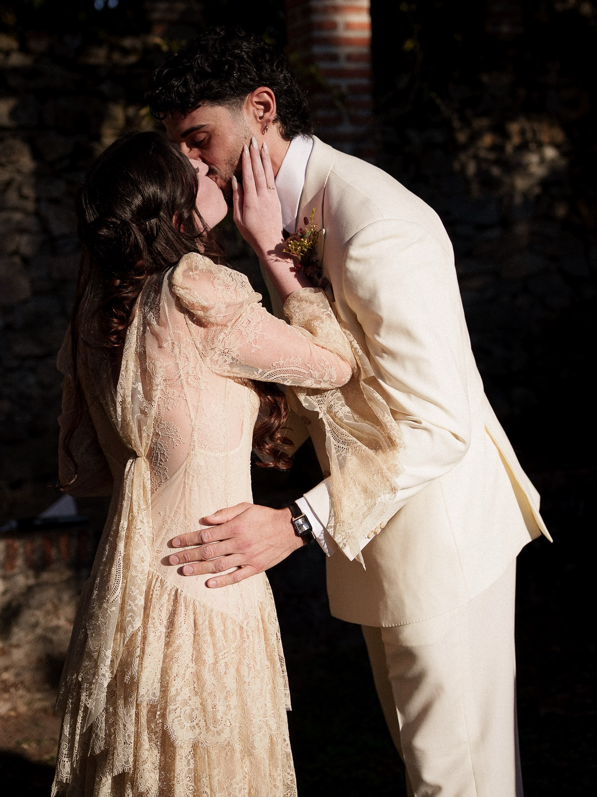

Wedding photographer
Warm, documentary, a little editorial.
I photograph weddings the way they actually unfold. I stay close, stay quiet, and wait for the moments nobody planned. When the light is right or a frame is worth setting up, I'll take a minute for it, but I won't turn your day into a photoshoot.
The result is honest and a bit cinematic: soft light, open shadows, warm colour with a film-like feel. I also work on film sets, which taught me to watch people who forget the camera is there.



Based in Ibiza
I was born here, so I know how the light moves across the island and how to plan around it: golden hour on the coast, a shaded garden at midday, a villa after dark.

Getting ready
The quiet part of the day. Someone does her makeup, someone else fixes a hair clip, and nobody is performing yet. I keep to the edge of the room and let it happen.
Ceremony
The walk back down the aisle, under petals thrown by the people who came to see you. I'm most interested in this minute, when the vows are done and the two of you are still taking in what just happened.


Dinner and party
After dark, I switch to direct flash on purpose. It gives that slightly vintage, old-party-snapshot look, with the light falling on whoever is doing something worth looking at. Here, a wedding gift being opened.
Getting married in Ibiza?
Tell me the date, the place, a little about the two of you.
Check availability

